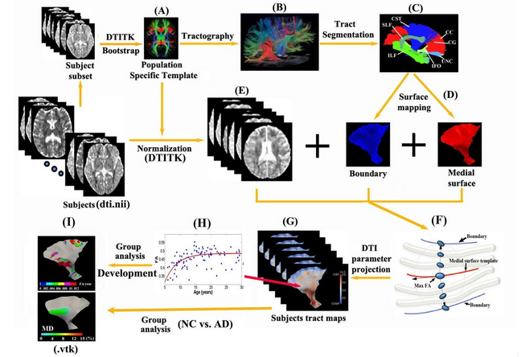

Diffusion MRI (dMRI)¶
TractoFlow pipeline is developed by the Sherbrooke Connectivity Imaging Lab (SCIL) in order to process diffusion MRI dataset from the raw data to the tractography. The pipeline is based on Nextflow and Singularity. The goal with this pipeline is to be fast and reproducible.
Use TractoFlow in published works should be accompanied by the following citation:
Theaud, G., Houde, J.-C., Boré, A., Rheault, F., Morency, F., Descoteaux, M.,TractoFlow: A robust, efficient and reproducible diffusion MRI pipeline leveraging Nextflow & Singularity, NeuroImage, https://doi.org/10.1016/j.neuroimage.2020.116889.
TractoFlow pipeline¶
TractoFlow pipeline consist of 23 different steps : 14 steps for the diffusion weighted image (DWI) processing and 8 steps for the T1 weighted image processing.
Input
Diffusion weighted image (DWI) b-values b-vectors T1 weighted image Reverse phase encoding B0 (Optional)
DWI processes
Brain extraction (FSL) Denoising (Mrtrix3) Topup (FSL) Eddy (FSL) N4 bias correction (ANTs) Resample (Dipy) DTI metrics (Dipy) fODF metrics (Dipy)
T1 processes
Brain extraction (ANTs) Denoising (Dipy) N4 bias correction (ANTs) Resample (Dipy) Registration (ANTs) Tissue segmentation (FSL)
Tractography
The particle filter tractography is performed. Two types of seeding are available: WM-GM interface or WM mask.
../_images/tractoflow_graph.png
Type of Measures¶
DTI parameter maps, including fractional anisotropy (FA), mean diffusivity (MD), axial diffusivity (AD) and radial diffusivity (RD), are four key quantitative parameters for the assessment of tissue micro-structure.
Image preprocessing steps include motion and eddy current distortion corrections and diffusion tensor fitting, which are performed using FSL 5.01. Eddy-current induced distortion of diffusion weighted images (DWI) and head motion during scanning are corrected by registering the DW images to the b0 image with an affine transformation (FLIRT). Calculating diffusion tensor (DT) metrics involves a voxel-wise calculation of the tensor matrix, including FA, MD, AD, and RD (using DTIFIT).
Three DTI analysis approaches will be pursued initially to measure diffusion parameters in different brain regions (ee are not proposing any voxel-based analysis methods at this point): (i) semi-automated tractography that yields averages over entire a priori defined tracts (ii) tract specific analysis for potential regional changes that differ along white matter tracts, and (iii) region-of-interest for specific regions such as deep grey matter structures.
Population-Based White Matter Tractography Using a Semi-Automated Approach¶
The extraction of white matter tracts manually using DTI tractography is problematic for large population studies of a number of tracts due to the complexity of the process, the user bias, and time associated with placing of regions of interest that tracts must pass through. In our previous study, we proposed a novel semi-automated tractography method to extract major white matter tracts in each individual that was based on placing tractography seeding regions-of-interest only once on a template that then gets transferred to all other subjects (Catherine Lebel et al. 2008). This tool is now publicly available in Dr. Alexander Leemans’ ExploreDTI (www.exploreDTI.com) software, which we use for many of our in-house DTI studies. It does require setting thresholds for tractography (e.g. fractional anisotropy minimum value, maximum angle of primary eigenvector between adjacent voxels, etc) and usually needs visual inspection of all tracts and trimming of erroneous streamlines per individual. This method enabled the study of healthy ‘typical’ aging in 8 tracts (left and right), 3 commissural tracts, and fornix in 403 subjects aged 5 to 83 years (C. Lebel et al. 2012) – the manual tracking of 403 x 20 = 8060 tracts would not have been possible. However, it has limitations in that the registration and spatial normalization was performed with an affine transformation on the non-diffusion-weighted images (so-called b0 images) to obtain warping parameters for each subject. There are better methods to register inter-subject images (or the same images from one person acquired longitudinally) especially in the presence of brain atrophy as expected in AD. This methodology yields four diffusion parameters per tract that can be readily uploaded to a central database.
Surface-Based Tract Specific Analysis (TSA) with Improved Spatial Normalization of Groups of Diffusion Tensor Images using DTI-TK¶
While tractography approaches have typically averaged over all voxels in a tract (as in 2B.1.1), it is recognized that the entire tract may not be changing in unison. This common approach neglects focal changes and can reduce power in group comparisons or correlations with clinical scores. Recent techniques have been developed to enable the analysis of diffusion parameters along the length of individual white matter tracts (Colby et al. 2012)(Corouge et al. 2006)(Goodlett et al. 2009)(O’Donnell, Westin, and Golby 2009). A recent study also found various diffusion parameters that were variable along a few white matter tracts in Alzheimers Disease Neuroimaging Initiative (ADNI) subjects (Nir et al. 2015). However, those methods are best suited for tracts with tubular geometry such as the cingulum as DTI measurements are averaged across the cross-section along the fibers; larger sheet-like structures such as corpus callosum (CC) have to be divided into several tubular bundles.
This surface model based tract specific analysis with improved spatial normalization of groups of diffusion tensor images to 178 healthy subjects and showed robust diffusion changes from early childhood to young adulthood at different sections of each tract (Chen et al. 2016). More importantly, we have demonstrated some promising results in the analysis of the ADNI dataset (cross-sectional and longitudinal) using this surface-model approach (Chen et al. 2016)(Chen et al. 2015).
Figure 1 demonstrates a flow chart of the procedures for this surface-model method. Unlike the semi-automated tractography method in Section 2.1 where the tractography and DTI parameters are extracted in native space per subject, the TSA method does not do tractography in each subject but rather uses the tract template to identify corresponding voxels in the template co-registered diffusion images/maps. The along the tract parameters on individual meshes per tracts are not transferrable to a central database.
Figure 1: A deformable DTI registration algorithm, DTI-TK (http://dti-tk.sourceforge.net), is used in which image similarity is computed based on full tensor images (A,E). All subjects are aligned to a population specific template. Major tracts (C) and their corresponding medial surfaces (D) are manually segmented and extracted from the brain tractography of the template (B). The red curve represents the medial surface (skeleton) of the corticospinal tract (F). The boundaries (purple edges) are derived from the skeleton and radial field by inverse skeletonization. The vector (black arrow) lies in the tangent plane of the medial surface, and points in the direction of greatest changes in radius. DTI measurement (e.g., max FA) along the radius within the boundaries is then projected onto the individual subject’s tract map in the template space (G) and can be further analyzed per vertex such as fits versus age over a population (H,I) or between-group comparisons (I). Template surface mapping (D) only needs to be created once for all subjects.
{kind=link}
Surface Model of Deep Grey Matter Structures for the Assessment of DTI Images (Proposed)¶
One potential extension of the pipeline under discussion is the analysis of surface model of deep grey matter structures obtained from automatic or manual segmentation for the assessment of DTI images. DTI analysis of cortical gray matter has revealed abnormalities in several patient groups such as multiple sclerosis (Rovaris et al. 2006) and mild cognitive impairment (Ray et al. 2006). Thus, the use of surface DTI scalar values to extract statistically powerful parameters provided careful use of smoothing and controlling for particular confounds may contribute to a better understanding of the extent and variability of grey matter pathology in brain diseases.
Quality Control for Diffusion MRI (Proposed)¶
Quality control currently is usually by visual inspection of the raw images for artifacts and excessive motion where corrupted images can be discarded. However, manual visualization is user dependent and time consuming. It would be useful to have software to identify potential datasets with issues.
One future module of the pipeline includes the development of the integration of DTIprep with the current pipeline. DTIPrep is a dedicated dMRI QC software platform developed by I. Oguz etc. at University of Iowa to identify and correct common dMRI artifacts (Oguz et al. 2014). More specifically, the automatic QC phase performs steps such as image information checks, diffusion information checks, Rician noise removal on raw DWI volumes, inter-slice brightness artifact detection, eddy-current/motion artifact correction, residual motion detection, directional artifact detection/correction, etc. The meta-analysis of the QC reports has proven to be a valuable tool in identifying subtle site- or scanner-specific MR hardware anomalies that can be dynamically addressed to ensure the highest quality data collection (Oguz et al. 2014). However, the effectiveness of QC software for our current DTI (and ultimately CCNA) datasets is still under investigation.